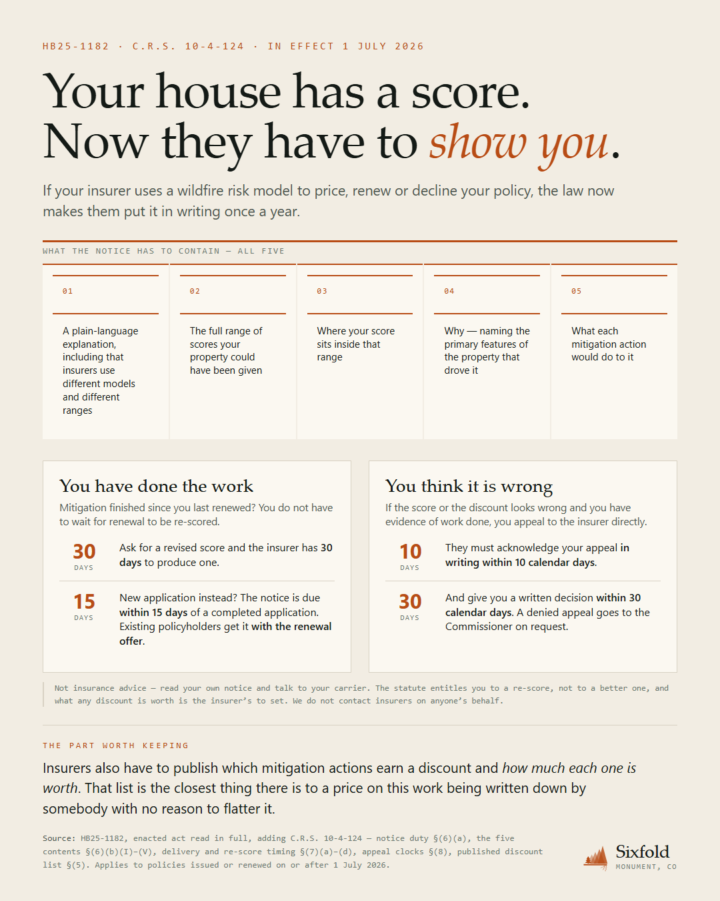
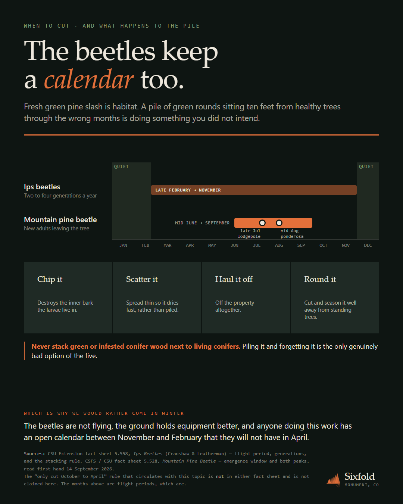

Sixfold Colorado · Social boards · 14 September 2026
Draft only. Nothing published, posted, scheduled or staged — and there is still no platform account to post from. Each PDF is one borderless page at 1080×1350 (4:5). Click a board to open its PDF.

BOARD 03
What the annual notice must contain, all five items, and the two clocks a homeowner can start: 30 days for a re-score, 10 and 30 for an appeal. It says plainly that the statute entitles you to a re-score, not to a better one.

BOARD 04
Both flight windows on one year, with the quiet months falling at each end of the chart because the year wraps. Then the four honest things to do with a pile, and the one rule. The unverifiable “October to April” rule is named and refused on the board.